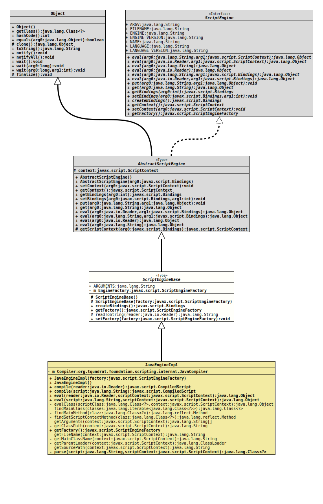

Class ScriptEngineBase
java.lang.Object
javax.script.AbstractScriptEngine
org.tquadrat.foundation.scripting.spi.ScriptEngineBase
- All Implemented Interfaces:
ScriptEngine
- Direct Known Subclasses:
JavaEngineImpl
@ClassVersion(sourceVersion="$Id: ScriptEngineBase.java 1070 2023-09-29 17:09:34Z tquadrat $")
@API(status=INTERNAL,
since="0.0.5")
public abstract class ScriptEngineBase
extends AbstractScriptEngine
This class is meant as a base class for a concrete implementation of a
script engine. Based on
AbstractScriptEngine
it will provide some additional methods for convenience.- Author:
- Thomas Thrien (thomas.thrien@tquadrat.org)
- Version:
- $Id: ScriptEngineBase.java 1070 2023-09-29 17:09:34Z tquadrat $
- Since:
- 0.0.5
- UML Diagram
-

UML Diagram for "org.tquadrat.foundation.scripting.spi.ScriptEngineBase"
{kind=link}
-
Field Summary
FieldsModifier and TypeFieldDescriptionstatic final StringThe name for the variable that holds the command line arguments: "arguments".private ScriptEngineFactoryThe factory that created this engine; may benullFields inherited from class javax.script.AbstractScriptEngine
contextFields inherited from interface javax.script.ScriptEngine
ARGV, ENGINE, ENGINE_VERSION, FILENAME, LANGUAGE, LANGUAGE_VERSION, NAME -
Constructor Summary
ConstructorsModifierConstructorDescriptionprotectedCreates a newScriptEngineBaseinstance.protectedScriptEngineBase(ScriptEngineFactory factory) Creates a newScriptEngineBaseinstance. -
Method Summary
Modifier and TypeMethodDescriptionprotected static final StringreadToString(Reader reader) Reads the complete contents from aReaderinto a String.final voidsetFactory(ScriptEngineFactory factory) Sets a new script factory.Methods inherited from class javax.script.AbstractScriptEngine
eval, eval, eval, eval, get, getBindings, getContext, getScriptContext, put, setBindings, setContextMethods inherited from class java.lang.Object
clone, equals, finalize, getClass, hashCode, notify, notifyAll, toString, wait, wait, waitMethods inherited from interface javax.script.ScriptEngine
eval, eval
-
Field Details
-
ARGUMENTS
The name for the variable that holds the command line arguments: "arguments".- See Also:
-
m_EngineFactory
The factory that created this engine; may benull
-
-
Constructor Details
-
ScriptEngineBase
protected ScriptEngineBase()Creates a newScriptEngineBaseinstance. -
ScriptEngineBase
Creates a newScriptEngineBaseinstance.- Parameters:
factory- The reference to the engine factory; may benull.
-
-
Method Details
-
createBindings
- See Also:
-
getFactory
- See Also:
-
readToString
Reads the complete contents from aReaderinto a String.- Parameters:
reader- The reader- Returns:
- The resulting String.
- Throws:
ScriptException- Problems with reading from the reader.
-
setFactory
Sets a new script factory.- Parameters:
factory- The new factory; can benull.
-